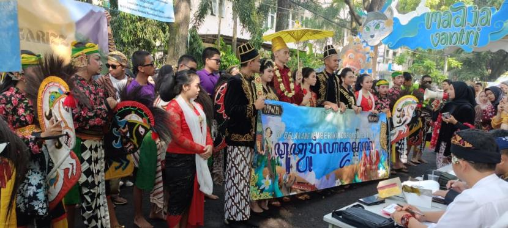

Festival Budaya
Pada 18 Oktober 2025, SMAN 3 Bandung menggelar acara bertajuk Festival Budaya 2025 di kampus mereka, Jl. Belitung No. 8, Bandung. Acara ini terbuka untuk publik (“Free Entry”) dan mengundang seluruh warga sekolah serta masyarakat sekitar.
Tema dari festival ini ialah “Ghawar Nusa”, yang menggambarkan semangat kebudayaan nusantara dan kolaborasi antar daerah.
Di dalam festival tersebut terdapat berbagai pertunjukan seni dan budaya seperti tari tradisional (termasuk tarian dari daerah luar Jawa Barat) dan pameran budaya serta kuliner tradisional yang menampilkan keberagaman provinsi di Indonesia. Sebelumnya pada edisi tahun-2024, SMAN 3 telah menghadirkan konsep serupa dengan kolaborasi seni dari berbagai daerah.
Diposting: 5 Oktober 2025